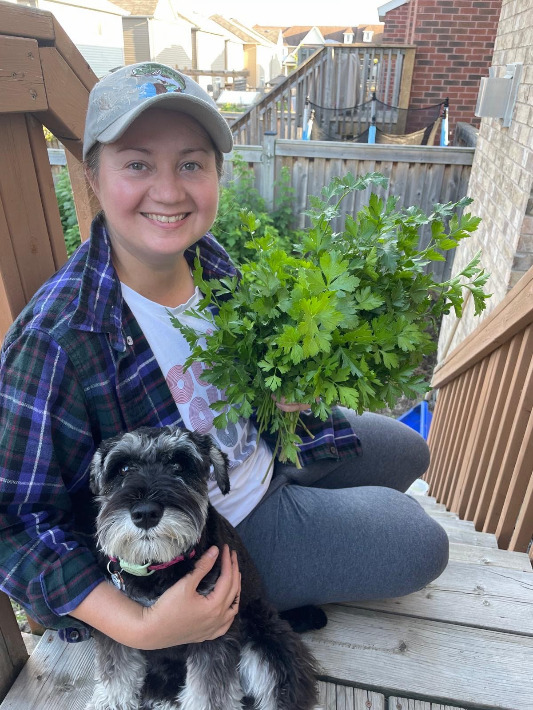

I bring together data analytics, applied research, and experience in clinical healthcare and
environmental research to understand complex systems, identify meaningful patterns, and support
evidence-based decisions.
Interdisciplinary experienceHealthcare ·
Environment · Research
Curiosity, care, and clarity.
Professional Experience
Research and clinical experience across environmental science, academic research, and patient care. The
roles and responsibilities below follow my resume.
Research and Analytical Experience
Feb–Aug 2026Toronto,
ON
Human-Coyote Interactions Research Project
Humber Polytechnic
Conducted comparative municipal policy and regulatory research, synthesizing legislation,
government reports and peer-reviewed evidence.
Evaluated reporting practices, intervention criteria and evidence gaps to support
multidisciplinary recommendations.
Contributed source-material research informing interview preparation and project recommendations.
Jun–Oct 2015Toronto,
ON
Lawrence S. Bloomberg Faculty of Nursing
University of Toronto
Supported doctoral research through literature screening, participant communications and research
administration; maintained Excel-based evidence tracking.
2011–2013North Bay,
ON
Plant Ecology Research Lab
Nipissing University
Supported plant ecology field and laboratory research, data entry, statistical analysis, reports
and presentations using Excel and SPSS.
Additional Professional Experience
Nov 2016–Apr 2019Toronto,
ON
Registered Nurse, Acute Care Nursing Resource Team (ACNRT)
Sunnybrook Health Sciences Centre
Delivered acute care across general medicine, surgical oncology, medical/radiation oncology and
overflow inpatient services, adapting across workflows, teams and patient populations while
maintaining accurate, PHIPA-compliant documentation.
Served in charge and leadership capacities; coordinated workflows and escalations, mentored staff
and students, and contributed to quality improvement and knowledge translation.
Apr 2019–Apr 2021Toronto,
ON
Registered Nurse, General Internal Medicine & Nephrology
Sunnybrook Health Sciences Centre
Managed medically complex and nephrology patients; performed charge-nurse duties, oriented staff,
precepted students and contributed to unit quality improvement as a wound care champion.
Oct 2021–Jan 2022Keswick,
ON
Registered Nurse
Cedarvale Lodge
Coordinated long-term-care resident care, maintained regulated documentation, supervised RPN/PSW
care and collaborated with families and allied-health professionals.
Jan–Sep 2022Newmarket,
ON
Registered Nurse, General Internal Medicine
Southlake Regional Health Centre
Coordinated admissions, discharges and care across patient acuities; performed charge-nurse duties
and managed interdisciplinary workflows requiring accurate documentation and rapid evidence-based
decisions.
Tools & Skills
A snapshot of the technical stack, analytical methods, research practices, and systems I have used through
projects and professional experience.
EHR experience as a clinical end user; no system-administration expertise is implied.
Professional Software
Microsoft 365WordPowerPointOutlookTeamsSharePointOneDrive
Selected Analytics Projects
Applied work in healthcare reporting, public-sector data, business intelligence, forecasting, and cloud
databases. Visit my
GitHub profile to explore my published repositories. Project-specific links can be added as each
repository goes live.
HEALTHCARE & BI
Quality of Life in Canada - Healthcare Analysis
Power BI · DAX · Statistics Canada · Humber
Polytechnic, 2026
Owned the healthcare component of a collaborative BI project, developing dashboards to examine life
expectancy, chronic conditions, obesity, mental health and unmet healthcare needs.
Impact: Used DAX and interactive visualizations to communicate patterns in healthcare
indicators, applying clinical knowledge to interpret findings and support discussion.
Python · MySQL · Prophet · Power BI · Humber
Polytechnic, 2026
Analyzed 274K+ City of Toronto shelter records across 278 programs and 41 organizations to investigate
capacity gaps, overcrowding risk and sector-level patterns.
Impact: Consolidated six annual datasets, automated cleaning, validation and MySQL
loading in Python, and built reusable views, forecasting and Power BI reporting.
Integrated web, mobile and partner data into a relational reporting model with reusable SQL views and
Power BI KPIs; validated sources and investigated inconsistencies.
Impact: Built repeatable analytical structures and reporting for revenue, products and
channels; used EXPLAIN and indexing to reduce query rows scanned from 240 to 34.
Python · LightGBM · CatBoost · Time series · Humber
Polytechnic, 2026
Analyzed 421K+ sales observations across 3,331 Store-Department time series using chronological
validation and leakage-aware feature engineering for 13-week forecasts.
Impact: Reduced forecast error approximately 13.2% against a Seasonal Naive benchmark;
documented model comparisons and validation decisions.
Independently deployed a four-table relational MySQL sales database on an AWS EC2 Ubuntu instance,
implementing PK/FK relationships, CRUD operations, joins and transaction controls.
Impact: Secured database access using IP-restricted SSH, non-public database/management
ports and an encrypted SSH tunnel; resolved authentication, networking and database-access issues.
Developed a customer segmentation workflow using Recency, Frequency and Monetary (RFM) scoring on a public e-commerce dataset. Built data-quality checks, customer-level transformations, five rule-based segments, and reporting tables for a Databricks dashboard.
Results: Analyzed 85,518 qualifying transaction rows, representing 61,258 distinct orders and 29,695 customers, with $62.85M in qualifying revenue. The dashboard is available as a PDF export.
Principles of Clinical Research · Research Ethics · Clinical Trial Design
Bachelor of Science in Nursing (Honours)
University of Toronto
2016
Bachelor of Science in Biology (Honours, with Distinction)
Nipissing University
2014
Training & Research Activity
Additional learning and research contributions.
Dashboard in a Day – Power BI
Microsoft Power BI Training
Conference Abstract and Proceedings – Research Assistant Acknowledgement
June 2026 · NLP-Driven Discovery of Urban Coyote Behavior Patterns in Municipal Citizen-Report
Data
Contribution: Source-material, policy, regulatory and municipal-program research informing interview
preparation and recommendations. Third International Student Conference on AI, Data Science, and Analytics
Innovation.
About Me

✿
Your dog-and-parsley photograph goes here.
I'm Balbina, a Toronto-based data analytics graduate with a background in healthcare, biology, and
applied research. My career has taken me from clinical practice to research and data analysis, with a
consistent interest in understanding complex systems and finding ways to improve them.
Today, I combine technical skills in SQL, Python, and Power BI with practical experience in research,
healthcare operations, and evidence-based problem-solving.
Interests & What Drives Me
I'm particularly interested in the intersection of data, human well-being, and environmental
sustainability. I'm drawn to work that explores how healthcare systems function, how
communities respond to social and environmental challenges, and how reliable evidence can inform better
decisions.
My interests include public health, healthcare delivery, environmental management, urban ecology, climate
resilience, and sustainable communities.
Ultimately, I'm motivated by opportunities to contribute to meaningful research, improve complex systems,
and support decisions that have a positive impact on people and the environments we share.
Let's connect.
Open to opportunities in analytics, research, and evidence-based decision support.